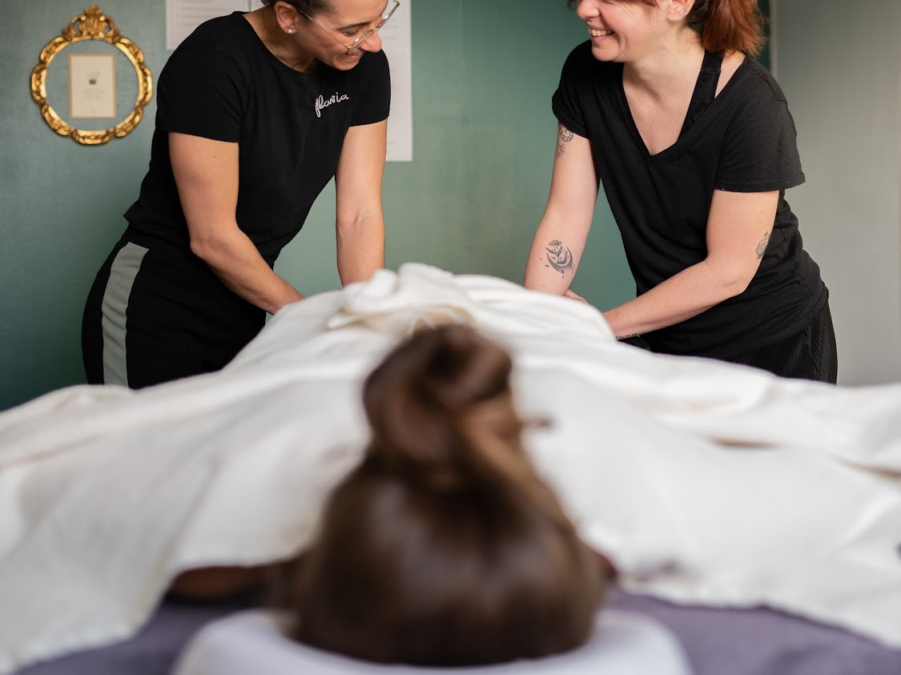

Apprendre un massage, ce n'est pas simplement observer une démonstration, mémoriser un enchaînement de gestes et repartir avec un protocole. C'est aussi apprendre à positionner ses mains, trouver la bonne pression, ajuster sa posture, savoir accompagner sa clientèle, ou encore développer sa fluidité.
Prendre le temps d'apprendre, vraiment.
Dans un petit groupe, chacun peut trouver sa place. On prend le temps de découvrir la technique, de poser des questions, de recommencer un geste et de revenir sur un détail qui nous échappe. Ou encore de peaufiner chaque objectif respectif. Parce qu'en formation, nous n'apprenons pas tous de la même manière ni au même rythme. Certains comprennent rapidement un enchaînement, d'autres ont besoin de le répéter plusieurs fois avant de se sentir à l'aise. Et c'est tout à fait normal !
L'intérêt d'un groupe à taille humaine, c'est justement de pouvoir respecter ces différences et de ne pas laisser quelqu'un avancer avec une difficulté qu'il n'a pas eu le temps d'exprimer. Dans un petit groupe, les échanges sont généralement plus faciles. On apprend aussi en observant les autres, en écoutant leurs questions et en partageant les difficultés rencontrées. Cela est parfois même très rassurant de savoir que les autres vivent et/ou ressentent la même chose !
Être accompagné(e) dans sa pratique.
En massage, les détails ont leur importance. Une position de main légèrement différente, une pression trop appuyée, une mauvaise installation ou un mouvement qui manque de fluidité peuvent modifier la qualité du geste et surtout le ressenti attendu !
Le but n'est pas de repartir en maîtrisant tout parfaitement en quelques jours. C'est de repartir avec des bases solides, des repères, des corrections personnalisées et suffisamment de confiance pour continuer à s'entraîner et à évoluer.
C'est pourquoi les temps de pratique sont essentiels. Le rôle du formateur selon moi, est de ne pas seulement montrer ce qu'il faut faire, mais aussi de pouvoir observer chaque stagiaire, le corriger, le guider et lui donner des pistes concrètes pour progresser. Pouvoir bénéficier de ces corrections individuelles est un véritable atout, particulièrement lorsqu'on débute une technique ou que l'on souhaite enrichir sa pratique professionnelle.
Oser poser des questions et prendre confiance !
Par expérience, soit en tant que stagiaire soit en tant que formatrice, je remarque que l'on peut parfois hésiter à poser une question devant un grand groupe, être gêné(e) de ne pas comprendre, avoir peur de mal faire ou se comparer aux autres stagiaires. Pourtant, les erreurs et les hésitations font partie intégrante de l'apprentissage.
Lors de mes sessions de formation (à 4 participants maximum), l'ambiance est conviviale et presque familiale: chacun peut avancer, essayer, se tromper et recommencer sans avoir l'impression de devoir être immédiatement à la hauteur. Nous avançons pas à pas dans la bonne humeur et la simplicité. Et je trouve que cette confiance est particulièrement importante dans un métier où le toucher, la relation à l'autre et la qualité de présence occupent une place primordiale.
Apprendre dans un cadre où chacun compte.
Chez HominiSens Formations, à Mouvaux (près de Lille), j'ai fait le choix de proposer des formations massage en petits groupes qui me permettent de rester disponible pour chaque stagiaire, de prendre le temps de corriger les gestes et de m'adapter aux besoins de chacun. Je tiens à ce que les journées de formation soient des moments d'apprentissage sérieux et encadrés, mais aussi agréables et remplis d'échanges, de partage.
Que l'on découvre le massage bien-être ou que l'on soit déjà praticien et que l'on souhaite développer ses compétences, je crois profondément que la qualité de l'accompagnement fait partie intégrante de la formation.
Parce qu'au-delà de la technique que l'on vient apprendre, il y a aussi une personne qui apprend, qui doute parfois, qui progresse et qui construit peu à peu sa propre pratique.
Et ça, ça mérite qu'on prenne le temps de s'y consacrer.
À très vite en formation !
Retrouvez toutes les sessions sur la page : https://www.hominisens.com/techniques-tarifs.html
formation massage en petit groupeformation massage bien-être Lilleformation massage Mouvauxapprendre le massage bien-êtreformation massage professionnelapprentissage des techniques de massagedevenir praticien en massage bien-êtreformation massage Hauts-de-Franceformation massage avec accompagnement personnalisé